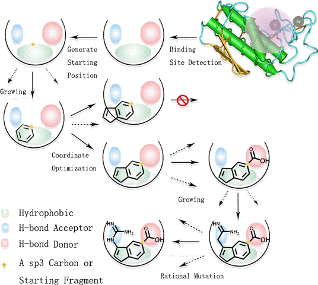
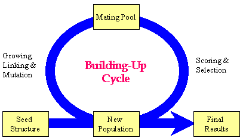

The major function of Build is constructing ligand molecules for the target protein by applying the fragment-based design strategy. All the molecules are developed and evolved with a Genetic Algorithm procedure. The synthesis accessibility of designed compounds can be analyzed with the aid of an embedded chemical reaction database and a retro-synthesis analyzer. Moreover, using a set of evaluation rules, ligands can be designed to best fit the identified cavities. Drug-like and privileged fragments can be used to construct ligands with the aid of internal and external absorption, distribution, metabolism, excretion, and toxicity (ADME/T) and drug-like filters. In addition to these novel functions, Build inherited all the existing algorithms, features, and libraries used in GROW and LINK modules of LigBuilder v1.2. All resultant molecules will be collected in a file and finally bring out a design report.
Please notice:
1.Build rely on the binding-site describing file generated by CAVITY.
Therefore, you should obtain the result of CAVITY first.
2.Although Build could be run in single CPU, we suggest user to run a number of Build processes simultaneously for accelerating, which helps to generate more compounds for further selection. The design speed will be linearly increasing with the number of processes. Furthermore, a "pseudo parallel" trick was applied by the Build in automatic mode to simplify the operation. If running on a mainstream workstation, a design task could takes 20 to 10000 CPU hours depends on the case. The running time will increase if the ligandability of
the binding site is much lower, or the users need much higher binding affinity. And de nove design may need more computational time, comparing with lead optimization mode. Attention: Build will consume a lot of memory, a typical Build process will use 1~2G memory, and user may control the memory consuming by loading different memory control parameter sets.
Synopsis of running Build:
build -Function Parameter_file [Id]
For example:
./build
-Automatic build.input
./build
-EXIT build.input 5
The parameter file assembles all the information necessary to run Build as you wish. You should edit the parameter file before running Build. The key words appeared in this parameter file are explained in the following.
For convenience, we provide some default parameter sets to adapt different task, user may simply loaded them into your parameter file by the keyword "INCLUDE" . They are under the path "LigBuilderV3/default/", including following default sets:
Overall default set:
default.input: The overall default parameter set of Build. Including all default settings of Build.
Default path:
path.input: The default path of all input and output files. You'd better avoid from modifying them directly, because the matching file names are important for Build to run under automatic mode. User may set the path by setting the predefine name.
Diversity set:
diversity_low/moderate/high.input: The default sets of molecule diversity. Increase the diversity may decrease the synthesis-accessibility. Default: Low.
Synthesize set:
synthesize_knowledge/rapid/moderate/accurate.input: The default sets for balancing the synthesis speed and accuracy. The embedded retro-synthesis analyzer is extremely resource consuming if we do not constrain the analysis accuracy. According to our experience, a rough synthesis accessibility estimation go with the design process is much more effective than an accurate strategy. Although a rapid strategy will decrease the reliability of the estimation, we could dispel this affection by the post analysis based-on the huge amounts of the design results. Knowledge strategy will provide a basic estimation, and it is very useful if your computer resource is limited. Default: Rapid.
Optimization set:
optimize_none/soft/moderate/intense.input: The default sets of molecular optimization intension. Default: Intense(Exploring), soft(Growing/Linking).
Memory control set:
design-memory_500G/1G/2G.input: The parameter set of maximal design memory. Increase the maximal memory to enhance the genetic algorithm. Default 1G/per session.
synthesize-memory_600M/1G/2G.input: The parameter set of maximal synthesis analysis memory (embedded analyzer). Increase the maximal memory to enhance the analysis speed. Default 1G/per session.
analysis-memory_1G/2G/3G.input: The parameter set of maximal synthesis analysis memory (post analyzer). Increase the maximal memory to enhance the analysis speed. Default 1G/per session.
ATTENTION: The maximal memory of a session is equal to the summation of the design memory and synthesize memory of embedded analyzer (1st + 2nd term), or the maximal synthesis memory of post analyzer (3rd term). Please select appropriate memory allocation solution according to your system resource.
Recommend set:
recommend_redock/inclusiveness/moderate/exactness.input: The default sets of LigBuilder V3 recommender. Build will output a huge amount of molecules in a design task (1~10 Million molecules, typically), and the recommender will help you to select the most potential molecules. Recommender applied a dynamic estimation equation to refine a large molecules library based-on the statistic of molecules, hence it would not be used to process a small molecules set in the standard mode. Nonetheless, we provide some solutions to adapt special cases. User may try the 'moderate' or 'inclusiveness' set if the 'exactness' strategy failed. And if you want to apply recommender to refine the docking result, you may try the 'redock' set.
Special design strategy set:
lead.input: The default set of lead design mode. Design lead structure with low molecular weight and high atomic efficiency.
mimic.input: The default set of mimic design mode. Design mimic inhibitor based on known inhibitors.(Growing/Linking Mode)
Speedup strategy set:
speedup.input: If you have limited computing resources or you want this work finished as soon as possible, we strongly recommend you to use speedup strategy. This strategy will lead to explore a smaller chemical space, so it is much more efficient. AND, this strategy has approximate design quality but less diversity comparing with normal strategy.
Usersettings:
usersettings.input: User may configure your design strategy by setting this file.

Illustration of design process
PROTEIN_NUM: Total targets number. Enable multi-target design if larger than 1.
POCKET_ATOM_FILE: The corresponding file given by CAVITY.
POCKET_GRID_FILE: The corresponding file given by CAVITY.
PROTEIN_FILE: The corresponding PDB file of receptor.
MULTI_WEIGHT: Weight of targets in ranking. Default should be 1.
SEED_LIGAND_LIST: The list of Mol2 files that present the "seed" structures (DESIGN_MODE:1 or 2). As mentioned above, this is absolutely necessary for growing mode and linking mode because the "seed" is the mother of all the resultant molecules. Therefore, it will be ideal if the seed structure holds the key features of the prospective ligands. LigBuilder V3 could generate seed structure from known inhibitors by the "Extract" function, and the inhibitors should be docked well or extract from the crystal structure directly. For more instruction of how to prepare a seed structure, please refer to the Advanced Skills section.
ADD_HSPC: YES: Treat all hydrogen atoms of the seed structure as the growing site.. NO: Only use user-defined growing sites. (DESIGN_MODE:1 or 2):
Then, there are the definitions of automatic mode, it would apply a pseudo-parallel trick:
CONTINUE_MODE: YES : Continue with previous seeds and results. No : Overwrite results and regenerating seeds
SESSION_NUMBER: The number of sessions you'll run at one time. 1 at least, default 100, the more, the better. If your computing resource is limited, please apply speedup strategy, or ligbuilder may not finish your job within a reasonable time.
MOLECULE_NUMBER: The goal of the design task. 10K at least, default 1M. We suggest that user may design 10M molecules in a task if you have plenty of computing resource. (Reference design speed: 1K per CPU hour, however, it is highly varied in different projects.)
OPTIMIZE_SEED: YES: Optimize the seed structure in the force field of LigBuilder V3. NO: Keep the original coordinates. This may cause collision if the seed structure is not assigned well.(DESIGN_MODE:1 or 2):
LIGAND_COLLECTION_FILE : This is the output file of Build. During the GA procedure, all the molecules which meet the rules you set will be collected into this file. It is in LigBuilder LIG format so it can be analyzed by "Process" function. Please notice that these molecules will not come only from the final generation but from every generation. It forms a structure-based virtual library for the target protein.
LEAD_COLLECTION_FILE : This file collects seed structures generated by Build. It is in Mol2 format.
SEED_RECORD_FILE : This file collects current seed structure library. It is in Mol2 format.
RANDOM_SEED : This is the seed of the random number generator. Natural number: Manually assignment seed. -1: Time dependent seed(default). -2: Id dependent seed (Id needed). Time dependent seed is intrinsic random and it is impossible to be repeated in individual runs even if they are executed in the exactly same environments and starting time. Id dependent will be repeatable with same id. Natural number seed will be repeatable with same number.
There are a set of chemical viability
rules, including "APPLY_CHEMICAL_RULES",
"APPLY_FORBIDDEN_STRUCTURE_CHECK",
"APPLY_TOXIC_STRUCTURE_CHECK",
"MAXIMAL_MOLECULAR_WEIGHT",
"MINIMAL_MOLECULAR_WEIGHT",
"MAXIMAL_LOGP", "MINIMAL_LOGP", "MAXIMAL_HB_DONOR_ATOM", "MINIMAL_HB_DONOR_ATOM", "MAXIMAL_HB_ACCEPTOR_ATOM", "MINIMAL_HB_ACCEPTOR_ATOM", "MAXIMAL_PKD", "MINIMAL_PKD" and "MINIMAL_AVER_PKD". To learn what these
parameters mean and how to set them, please refer to the Advanced Skills Section.
MAXIMAL_RESULTS: The design goal of each stand-alone session. 0: Unlimited design. Natural number: Stop when collected enough molecules.
Build uses Genetic Algorithm (GA) to develop and evolve molecules. It is run under generational-replacement mode. The rough procedure is like this: (1) Generate the initial population based on the seed structure; (2) Choosing "parents" molecules from the current population into the mating pool; (3) Copy the "elite" of the current population into the new population; (4) Fill out the new population by performing structural manipulations on the molecules in the mating pool. (5) Go to Step 2 until the pre-set number of generations has been reached.

Flow chart of the GA procedure implemented in Build
Therefore, there are a few parameters for setting up this GA procedure:
NUMBER_OF_GENERATION: Number of generations (GA circle) to go through. Typically 8~15 generations will be enough.
NUMBER_OF_POPULATION: Size of the population. This parameter determines dominatingly how much memory the program will take while running. Usually it is several thousands.
NUMBER_OF_PARENTS: Number of molecules to be selected into the mating pool. We recommend the ratio of NUMBER_OF_POPULATION / NUMBER_OF_PARENTS should be larger than 10.
SIMILARITY_CUTOFF: Maximal similarity between any two molecules in the mating pool. For instance, if it is set to 1.00, it means duplicates are not allowed to exist. By setting this parameter, you will exert a forced diversity in the mating pool and thus are more likely to get more diverse offspring. The lower this parameter is, the higher diversity will be achieved. We recommend this parameter to be 0.80~1.00.
ELITISM_RATIO: Percentage of "elitism". This parameter could be between 0 and 1. For example, if it is set to 0.10, that means the top 10% of the current population will be copied directly to the new population. By doing so, the elite molecules will not lose by accident. We recommend this parameter to be around 0.10.
GROWING_PROBABILITY: For the current version of Build, growing manipulation is the essential function. So please fix this parameter to 1.00.
LINKING_PROBABILITY: For the current version of Build, linking manipulation is the essential function. So please fix this parameter to 1.00.
BUILDING_BLOCK_LIBRARY: The path of the building-block fragment library. The default one is "fragment.mdb".
BUILDING_BLOCK_LIBRARY_EXTEND: The path of the extend building-block fragment library. The default one is "fragment.mdb/extend".
BUILDING_BLOCK_LIBRARY_ROTATABLE: The path of the rotatable building-block fragment library. The default one is "fragment.mdb/rotatable".
FORBIDDEN_STRUCTURE_LIBRARY: The path of the forbidden substructure library. The default one is "forbidden.mdb".
TOXIC_STRUCTURE_LIBRARY: The path of the toxic substructure library. The default one is "toxicity.mdb".
SYNTHESIZE_LIBRARY: The path of the building-block fragment library. The default one is "synthesize.mdb".
If you are a novice to LigBuilder V3, you can simply adopt the default settings for the above fragment libraries. If you want to learn how to edit them to meet your own purpose, please refer to the Advanced Skills section.
The output files will be named according to the predefined receptor name and result directory.
result/output_name/ligand.lig: Contains the molecules designed by Build in LigBuilder LIG format.
result/process_name/INDEX: Listing the molecules extracted by the "Process" function from the LIG file.
result/cluster_name/INDEX: Listing the cluster information generated by the "Cluster" function.
result/synthesize_name/synthesize.log Listing the synthesis analysis information generated by the "Synthesize" function.
result/report_name/report.html: The final report HTML file.
[Content] [Introduction] [Download] [Install] [Overview] [CAVITY] [Build] [Skills] [FAQs]
(These web pages are edited by Yaxia Yuan. Latest update: Oct. 2019)